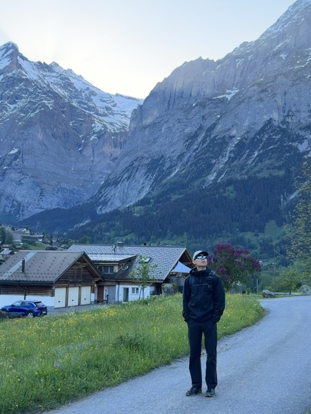

About

I started in computer science at Tidewater Community College and transferred to Old Dominion to finish in cybersecurity. That was less a change of subject than a change of angle. Writing software teaches you how a system is assembled. Security is about what happens when somebody takes it apart on purpose.
Most days I work as a maintenance technician at a timeshare resort: appliance repair, pool chemistry and equipment, and general facilities work across occupied units. It is unglamorous and it has been the most useful training I have had. You learn to diagnose from an incomplete description, work in a live environment you cannot shut down, and explain a failure to someone without making them feel stupid. A help desk and a service call run on the same three skills.
Before this I spent about three years at L.L.Bean in sales and a year and a half washing dishes. I am comfortable with hard work and with being the person who stays until the thing is actually fixed.
Away from work I fish the Sandbridge surf and the local piers, tie flies, and do leatherwork. All three are close attention over long stretches, which is probably why I like them.